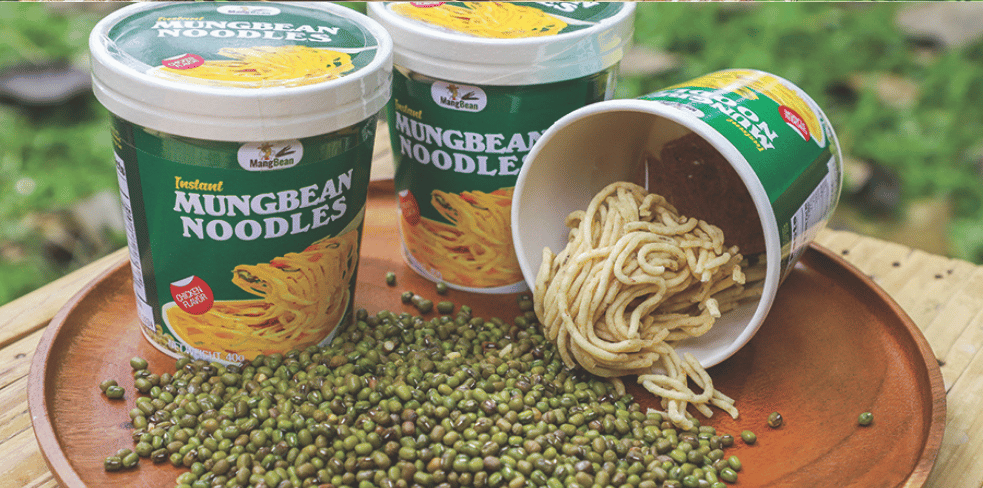
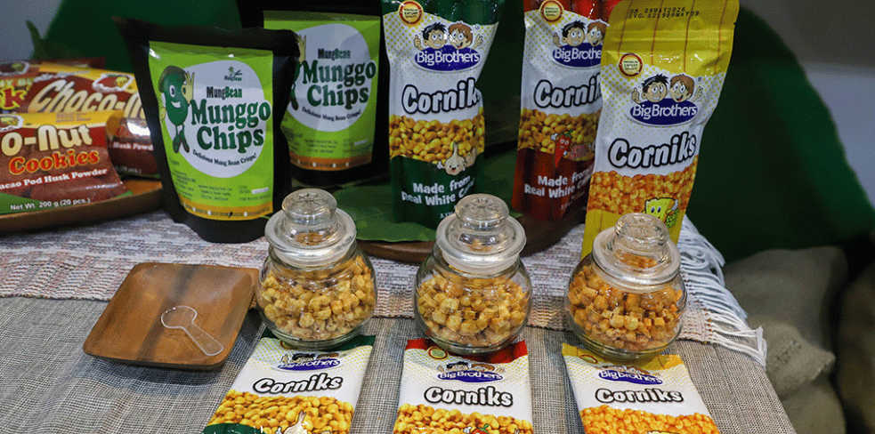
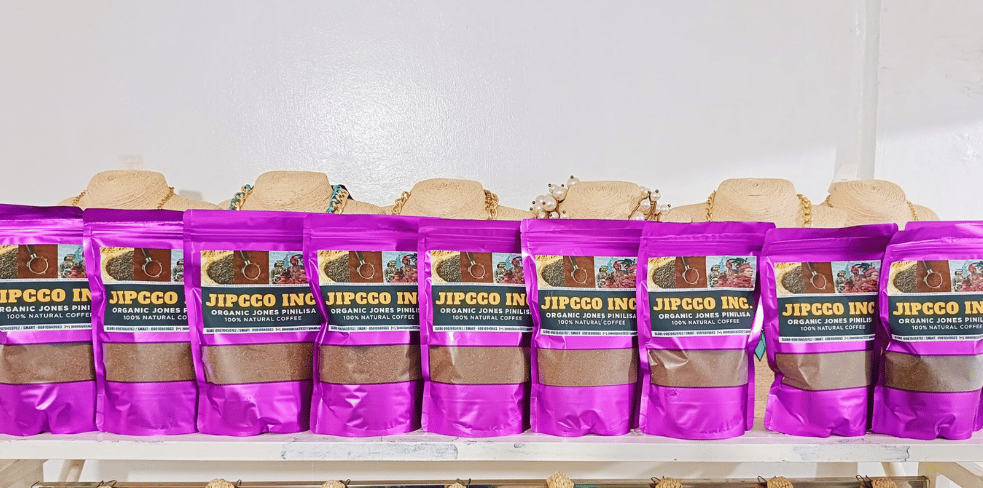

Gin‑C
Gin‑C is a natural juice drink from Jones, Isabela made from turmeric and calamansi. Originally shared as a refreshing, healthy beverage during the pandemic, it has since become a recognized local specialty thanks to community and cooperative efforts.

Mung Bean Products
San Mateo, Isabela is known for its variety of goods made from mung beans, including sprouted munggo for dishes, ground munggo flour, coffee, pulvoron, noodles, fried sprouts, and crispy chips. These products showcase the versatility of this nutritious legume.

Big Brother Cornick
Big Brother Cornick is a crunchy snack made from native white corn, often seasoned with garlic, cheese, or spicy flavors. A popular pasalubong item from Cauayan City, it’s loved for its rich taste and crispy texture.

Pinilisa
Pinilisa is a rare heirloom purple rice variety grown in Jones, Isabela. Known for its soft texture, nutty aroma, and distinctive color, it is considered a delicacy and a cultural staple reserved for special occasions.